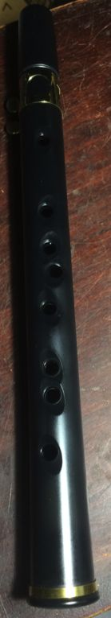
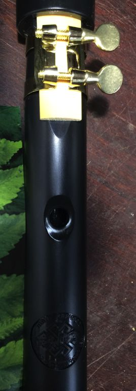
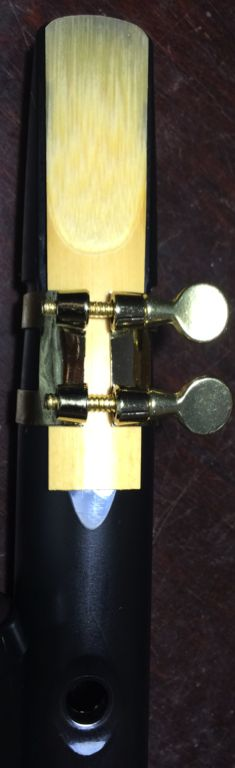
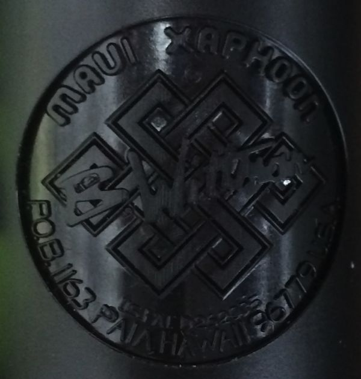

For Christmas of 2013, my son & his fiancé gave me a Xaphoon Pocket Sax. This is the mass-market plastic version of the instrument that Brian Wittman makes in Maui by hand from bamboo. It has a tenor saxaphone reed and holes similar to a recorder, though laid out differently. It can play a full two octaves, with practice. I have so far only played it a little bit, but I like it, and it will join my menagerie of musical instruments.
The Xaphoon Store allows you to mail-order bamboo and plastic Xaphoons, cases, books, and accessories. You can also buy a few of the plastic Xaphoon's at Amazon.
Click on an image for a higher resolution version.
|
 |
 |
 |
| The finger-hole side | The reed and thumb hole side | Close-up of the reed and thumb hole |
